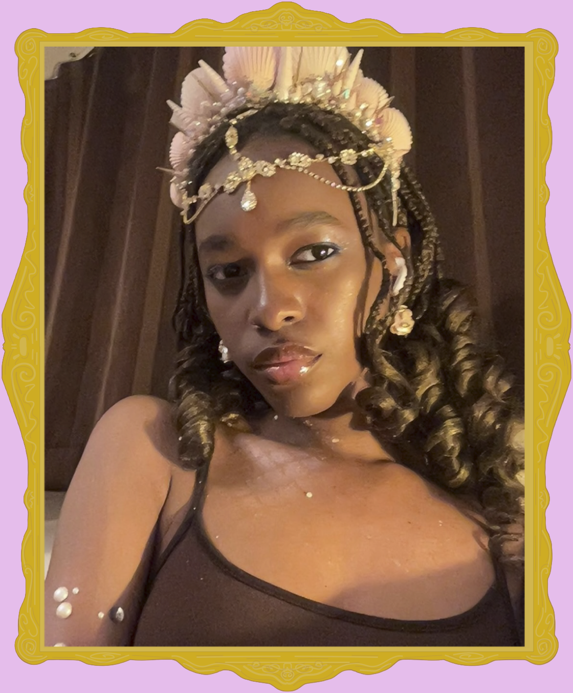
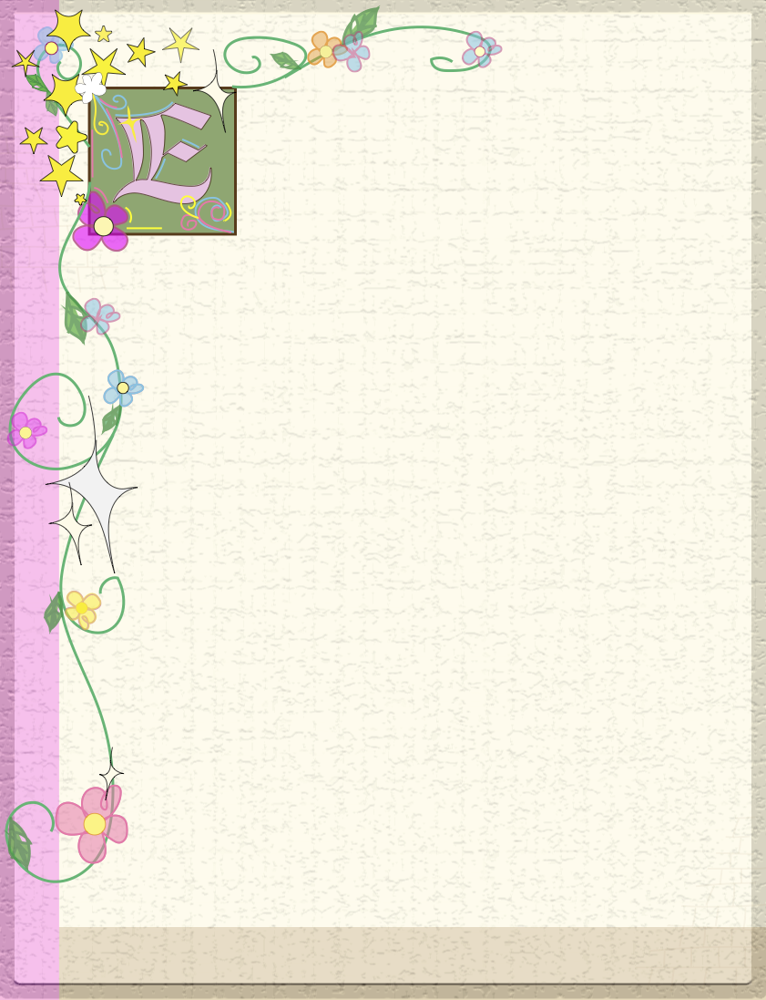

r was eens een meisje met een hoofd vol ideeën en een hart vol nieuwsgierigheid. Op haar 13e vroeg zij haar moeder om een naaimachine. Ze had nog niet veel ervaring met naaien, maar wilde graag leren hoe ze zelf kleding kon maken. Met deze naaimachine maakte zij haar eerste kledingstukken en ontdekte ze hoeveel plezier ze hieruit haalde. Tijdens de lockdown had zij extra veel vrije tijd. Ze begon steeds meer te naaien en maakte onder andere verschillende prinsessenjurken. Ze vond het leuk om zelf te bedenken hoe een jurk eruit moest zien en deze vervolgens helemaal zelf te maken. Soms lukte iets niet meteen, maar door veel te oefenen leerde ze steeds meer. Na verloop van tijd werd naaien een vaste hobby. Inmiddels vindt ze het geweldig om nieuwe kledingstukken te ontwerpen en te maken. Elk project is weer anders en brengt nieuwe uitdagingen met zich mee. Wanneer ze een nieuw idee heeft, begint ze vaak met een schets. Daarna gaat ze op zoek naar de juiste stoffen en materialen en begint ze met het maken van haar creatie. Wat ooit begon met één naaimachine en een nieuwsgierig meisje, is uitgegroeid tot een hobby waar ze nog steeds met veel plezier aan werkt.